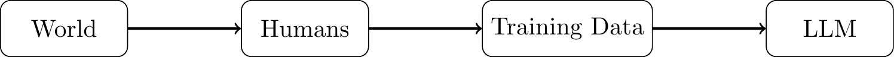
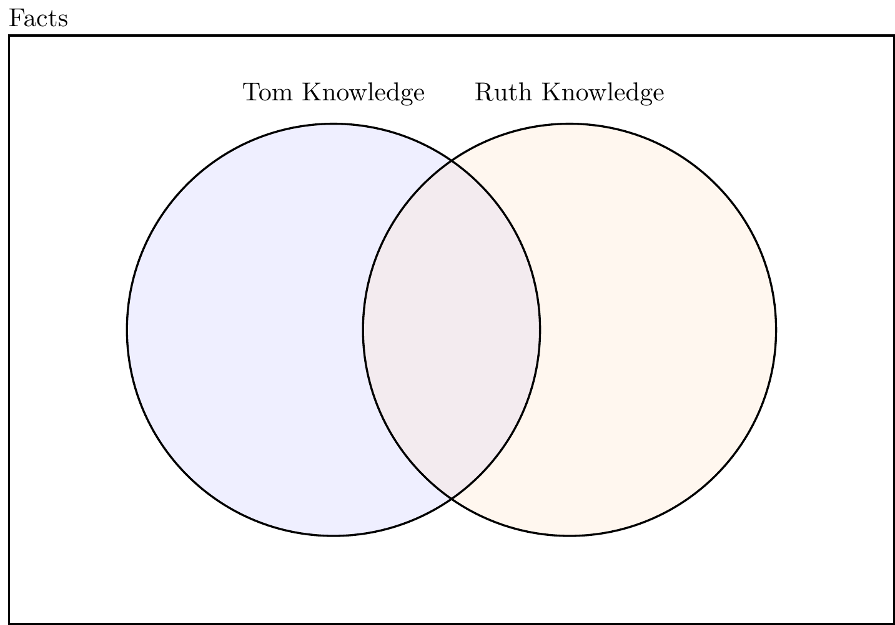
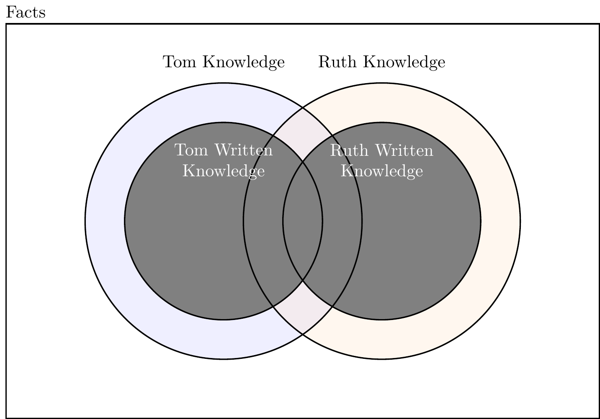
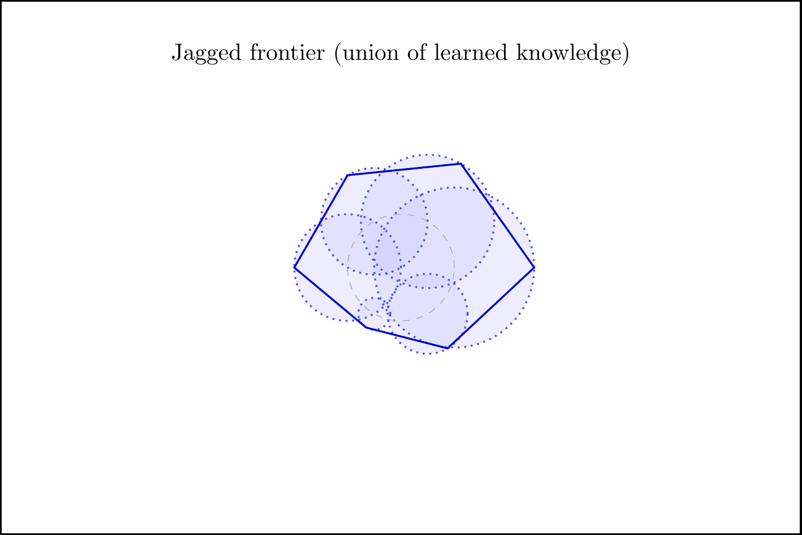

- One sentence version.
-
LLMs observe more datapoints than humans, but are worse at extrapolating from those data points; this therefore makes them relatively better at common problems, and relatively worse at rare problems.
In this note I give a simplified formal model of LLM vs human abilities, discuss the evidence we have on LLM capabilities, & the implications for the economic and safety effects of LLMs.
Overview
- Puzzle: why are LLMs better than humans at some tasks, worse at others?
- We do not have a standard theory of LLM capabilities, & there is a well-known puzzle: LLMs beat almost all humans on certain tasks (exam questions, interview questions), yet lose to almost all humans on other tasks (agentic tasks, playing games).
- People have proposed various properties of the tasks which might explain this jaggedness: computational complexity; time horizon; verifiability.
- Answer: success depends on similarity to the tasks in training set.
- For simplicity, treat humans and LLMs both as solving a supervised learning problem. Additionally assume that LLMs are worse at extrapolation.
LLMs have more knowledge than humans but less intelligence.
- This explains the capabilities of LLMs (jaggedness).
- I argue below that this gives a crisp characterization of what tasks LLMs can and cannot do.
This explains the economic implications of LLMs.
The economic and safety implications are downstream of this:
1. LLMs speeds up common tasks; (2) LLMs are good at tasks that take humans a short time (without context); (3) .- (simplest model: just lookup tables).
- This model already gives you fairly rich predictions.
- The theory has clear testable implications.
-
- Given some task, and two agents, the agent will be more likely to succeed if it has more experience with closer tasks.
- Helps explain many facts:
-
- LLMs pass aptitude tests but do not have the aptitude to do the job.
- LLMs can do short-horizon tasks as well as humans, but not long-horizon tasks.
Implications for Capabilities
- We want to explain the jaggedness.
- Does this theory of LLMs do a good job of explaining the capabilities of LLMs, i.e. the set of tasks that they can and cannot do?
- Chatbot use.
-
- Chatbots are used for new-to-you questions.
- Aptitude tests.
- Why can LLMs pass exams and evals, but not act in the real world?
- Time horizon.
-
- Tasks that take longer are farther from distribution, and so take humans longer time to assemble the properties of the question.
- The theory predicts outliers: (1) tasks that are additively separable.
- LLM transcendence.
- Zhang on transcendence: (1) skill denoising; (2) skill selection; (3) skill generalization. They have a model where different experts learn edges on a graph, you could think about this as compound questions where you need to know the answer to two subquestions, there you clearly get transcendence.
- Economic impacts / adoption
-
- Software engineering/
Implications for Economics
Implications for Safety
Formalization
- Atomic questions, scalar answers.
-
- You get a questions \(q\in Q\), from \(f(q)\), you choose an answer \(a\in\mathcal{R}\), with payoff \(y(q,a)\), and no correlation in payoffs.
- Venn diagram: your experience, others’ experience.
- Vector questions, linear-Gaussian answers.
-
- Get a closed form expression for (A) human; (B) agent; (C) agent-first.
- Scalar questions.
-
- If random answers, then equivalent to atomic questions.
Twitter Version
Here’s a theory of LLM and human capabilities.
Puzzle: why are LLMs better than humans at some tasks (exams, interviews), but worse at other tasks (interaction, long horizon, games)? Why is the frontier jagged?
Explanation: LLMs have more data but worse extrapolation. This implies they outperform humans on tasks that are common but underperform on tasks that are rare.
Introduction
This note treats chatbots as lowering the cost of access to existing public knowledge. A chatbot is essentially a database of questions for which the answer already exists in the public domain (and hence in the LLM training data). It implies that people will consult a chatbot when they encounter a question for which (i) they do not know the answer, and (ii) they expect that someone else does know the answer, and has documented it in the public domain.
The model expresses a very common view of LLMs, but has not been stated as explicitly before as far as I am aware. LLM chatbots clearly do many things which would not normally be described as answering questions (drawing pictures, drafting text, editing text, writing code), however the majority share of chatbot queries appear to be asking for information (Chatterji et al. (2025)). The core predictions can be expressed assuming a discrete set of questions, but I also derive predictions from a fuller model which allows for the user and chatbot to interpolate between answers among different related questions.
This model gives a variety of predictions about when chatbots will be used:
Chatbots will be consulted more by novices more than experts in a domain. This is because novices are more likely to encounter a question that they have not encountered before. A corollary is that chatbots will be used where you are a relative novice, e.g. a doctor will be more likely to use a chatbot for a legal question, and a lawyer will be relatively more likely to use a chatbot for a medical question.
Chatbots will be used more in occupations with high returns to experience. In domains where workers frequently encounter problems that are neither highly repetitive, nor entirely idiosyncratic, then we would expect high returns to experience, and also high chatbot use.
Chatbots will be used more in occupations with high mobility. If the same questions tend to recur across jobs within the same occupation then we expect high mobility between jobs, and also high chatbot use.
Chatbots will be consulted more for well-documented domains. Chatbots will be used more for questions about technologies that are public than technologies that are proprietary (which do not appear in the training material), and prevalence of questions about a technology should be convex in the popularity of that technology.
The model also gives us basic predictions about the equilibrium effect of chatbots:
Chatbots raise welfare through better decisions. We should also expect increases in welfare if agents can adjust on other margins, especially through reducing the use of other information-sources (books, web search), and through expanding the set of questions that a person attempts to answer.
Chatbots flatten comparative advantage. If comparative advantage is due to differences in knowledge (the set of questions for which you know the answer) then chatbots will flatten those differences. In a class of trade models where productivity differences are entirely driven by knowledge gaps, this is formally equivalent to “catch up” technology growth, where the catch-up implies: (1) higher average wages; (2) lower wages for the highest-paid; (3) lower trade, i.e. lower GDP (Dornbusch, Fischer, and Samuelson (1977), Wilson (1980)).
Existing models of AI adoption.
We can compare this to a few existing models of AI:
AI performs a task autonomously. (Zeira 1998) models automation as allowing capital to perform some task instead of labor. We then expect workers who previously specialized in those tasks to see declines in their wages, e.g. (Acemoglu and Autor 2011), (Acemoglu and Restrepo 2018).
AI reduces the time required to perform a task. (Eloundou et al. 2023) treats LLMs as reducing the time required to complete a task by a fixed proportion.[UNFINISHED]
AI supplies knowledge. Ide and Talamas (2024) and Autor and Thompson (2025) [UNFINISHED]. Important point about Garicano/Ide/Talamas model: (1) whether the knowledge required for a problem is known ex ante or ex post; (2) whether you can rank knowledge on a scale.
Note: Garicano and Rossi-Hansberg (2006) says "Our theory suggests that the impact of communication technology during the last years of the 1990s and early 2000s should lead organizations toward increasing centralization, an equalization of routine jobs, and a reduction of self-employment as hierarchies get larger through larger spans of control and more layers ... Our interpretation is that the underlying source of variation is the costs of acquiring and communicating information: improvements in the cost of accessing knowledge, mostly concentrated in the 1980s and early 1990s but present throughout the period, followed by improvements in communication technology in the late 1990s."
Vector model.
We also describe a model in which each question is a vector, based on an earlier model of LLMs written for a different purpose, Cunningham (2023).
Suppose each question \(\bm{q}\) is a vector of binary characteristics, and the true answer is a scalar, \(a\), determined by a set of unobserved weights, \(\bm{w}\), with \(a=\bm{w}\bm{q}\). The human guesses the answer to the new question by interpolating among previously-seen questions and answers (\((\bm{q}^i,a^i)_{i=1,\ldots,n}\)). They can also consult a chatbot which answers questions in the same way, but with a different set of previously-seen questions (i.e. the chatbot’s training data). We can then give a crisp closed-form expression for the expected benefit of consulting a chatbot, based on the relationship between the question \(q\), the human’s experience \(Q_1\), and the chatbot’s experience, \(Q_2\). We expect a chatbot to be consulted when you encounter a question that has components which fall outside the space formed from by your knowledge set (questions for which you know the answer), but which fall inside the space formed by the chatbot’s knowledge set.
Conjectures About Adoption
We can make some conjectures about adoption by occupation and by task:
| Occupation | Predicted ChatGPT use | Reason |
|---|---|---|
| software engineer - python | high | problems novel, discrete, similar to those on internet |
| software engineer - proprietary | low | problems novel, discrete, not similar to those on internet |
| physician | high | problems novel, discrete, similar to those on internet |
| contact center worker | low | problems novel, discrete, not similar to those on internet |
| architect | low | problems novel, not discrete, not text-based |
| manual worker | low | problems not text-based |
| Task | Predicted chatbot use | Reason |
|---|---|---|
| Intellectual curiosity | high | novel, discrete, similar to those on the internet |
| Diagnosing medical problems | high | novel, discrete, similar to those on the internet |
| Problems with widely-adopted systems (car, house, computer) | high | novel, discrete, similar to those on the internet |
| Problems with idiosyncratic systems (custom setups) | low | novel, discrete, not similar to those on the internet |
Additional issues.
Why are LLMs used as advisors, not agents? It’s notable that LLMs are relatively rarely given autonomy to make a decision without human oversight. ChatGPT is mostly built as an advisor, it cannot take actions on your behalf. This could be accommodated by this model if most questions have large private components, such that ChatGPT’s answer is worse than the human’s, but the ChatGPT-augmented answer is better than the human’s.
Relationship to time-savings. This model quantifies the benefit from ChatGPT as the accuracy of an answer to a question. Much other literature on LLMs measures the value in time-savings, e.g. most RCTs of LLM augmentation (both in the laboratory and the field), and many self-reports. We could convert the accuracy increase to a time-savings if we say that people can spend more time to increase accuracy.
How does ChatGPT differ from Google? If we interpret ChatGPT’s training set as the content of the public internet then the same model could be applied to a search engine. We could distinguish ChatGPT in two ways: (1) the cost of consulting ChatGPT is significantly lower because it will give an answer immediately, instead of directing the human to another page where they have to skim the text; (2) ChatGPT can interpolate questions in its training data, e.g. it will give an answer to your question even if nobody has answered that question before, but the answer can be predicted from the answer to other questions.
Dimensionality of the domain. We might be able to extend the model to distinguish between two types of dimensionality: (1) surface dimensionality (how many letters it takes to express the question/prompt); (2) the latent dimensionality of the domain. In general the returns to experience will depend on the latent dimensionality of the domain: if the latent dimensionality is low then a few examples is enough to learn the patterns, if the latent dimensionality is high then error continuously decreases with experience (there’s a nice closed-form expression for this).
High-dimensional answers. Our model assumes scalar answers. In fact ChatGPT gives high-dimensional outputs. I think we can say some nice things here.
Tacit knowledge. For some ChatGPT prompts the user can recognize a correct answer, but cannot produce a correct answer themselves (AKA a generation-validation gap). E.g. asking for a picture, asking for a poem. The generation-validation asymmetry can be due either to (1) computational difficulty; (2) tacit knowledge.
Routine questions. For some ChatGPT prompts the user can clearly do the task themselves, without any extra information but it’s time-consuming: e.g. doing a simple mathematical operation, alphabetizing a list, typing out boilerplate code. These types of queries don’t fit our model so well.
Model with Atomic Questions
Here we define the simplest model: given some question you will consult the chatbot if and only if (1) you do not know the answer to this question; (2) the chatbot does know the answer to this question.
Suppose you are confronted by a question (\(q\in\mathcal{Q}\)), and you have to supply an answer, \(\hat{a}\in\mathcal{R}\).
The chatbot’s set of prior questions-observed is \(\bm{Q}_1\subseteq \mathcal{Q}\), the user’s set is \(\bm{Q}_2\subseteq \mathcal{Q}\), with the composition of both sets public knowledge (i.e. you know whether the chatbot knows the answer to each question, without you knowing what that answer is).
It is clear that the user will consult the chatbot if and only if \(q\in Q_1\) and \(q\not{\in}Q_2\). In the vector model below, this discrete rule is replaced by a continuous analogue: you benefit from consulting the chatbot when the components of the question that lie outside your own experience overlap with the subspace spanned by the chatbot’s experience.
What Would a Satisfying Theory Look Like?

- Some implications:
-
- LLMs are capped at human abilities.
- LLMs are capped at training data.
- Chatbots consulted on questions that are new to you: doctors use it for legal questions; lawyers use it for medical questions.
- Chatbots relatively worse at off-distribution questions.




Visualization of Question Density

Model with Vector Questions
The State of the World and Questions.
The state of the world is defined by a vector of \(p\) unobserved parameters, \(\bm{w} \in \mathbb{R}^p\). A question is a vector of \(p\) binary features, \(\bm{q} \in \{-1, 1\}^p\). The true answer to a question \(\bm{q}\) is a scalar \(a\) determined by the linear relationship: \[a = \bm{q}'\bm{w} = \sum_{k=1}^p q_k w_k\]
Agents and Information.
There is a set of agents, indexed by \(i \in \mathcal{I}\). Each agent \(i\) possesses an information set \(\mathcal{D}_i\), which consists of \(n_i\) questions they have previously encountered, along with their true answers. We can represent this information as a pair \((\bm{Q}_i, \bm{a}_i)\):
\(\bm{Q}_i\) is an \(n_i \times p\) matrix where each row is a question vector. Let the \(j\)-th question for agent \(i\) be \(\bm{q}_{i,j}'\), so that: \[\bm{Q}_i = \begin{bmatrix} \bm{q}_{i,1}' \\ \vdots \\ \bm{q}_{i,n_i}' \end{bmatrix} = \begin{bmatrix} q_{i,1,1} & \cdots & q_{i,1,p} \\ \vdots & \ddots & \vdots \\ q_{i,n_i,1} & \cdots & q_{i,n_i,p} \end{bmatrix}\]
\(\bm{a}_i\) is an \(n_i \times 1\) vector of the corresponding answers. The answers are generated according to the true model: \[\bm{a}_i = \bm{Q}_i \bm{w}\]
Beliefs.
All agents share a common prior belief about the state of the world, assuming the weights \(\bm{w}\) are drawn from a multivariate Gaussian distribution: \[\bm{w} \sim N(\bm{0}, \Sigma)\] where \(\Sigma\) is a \(p \times p\) positive-semidefinite covariance matrix. A common assumption we will use is an isotropic prior, where \(\Sigma = \sigma^2 \bm{I}_p\) for some scalar \(\sigma^2 > 0\). This implies that, a priori, the weights are uncorrelated and have equal variance.
Given their information set \(\mathcal{D}_i\), agent \(i\) forms a posterior belief about \(\bm{w}\). When a new question \(\bm{q}_{\text{new}}\) arises, the agent uses their posterior distribution to form an estimate of the answer, \(\hat{a}_{\text{new}} = \bm{q}_{\text{new}}' \mathbb{E}[\bm{w} \mid \mathcal{D}_i]\).
Throughout the analysis below we make two simplifying assumptions. First, observations are noiseless: when an agent has seen a question before, they observe its exact true answer, so that \(\bm{a}_i = \bm{Q}_i\bm{w}\). Second, the matrices \(\bm{Q}_i\Sigma\bm{Q}_i^{\top}\) (and, under an isotropic prior, \(\bm{Q}_i\bm{Q}_i^{\top}\)) are invertible, so that the posterior expressions are well defined. Both assumptions can be relaxed (for example by allowing noisy answers), at the cost of slightly more involved algebra but with the same basic geometry: what matters is how a new question projects onto the subspaces spanned by past questions.
Propositions
Proposition 1 (Posterior over \(\bm{w}\) given \(\bm{Q}\) and \(\bm{a}\)). The agent’s posterior mean and variance will be: \[\begin{aligned} \hat{\bm w}&= \Sigma \bm{Q}^{\top}(\bm{Q}\Sigma \bm{Q}^{\top})^{-1}\bm a\\ \Sigma_{\mid a} &=\Sigma-\Sigma \bm{Q}^{\top}(\bm{Q}\Sigma \bm{Q}^{\top})^{-1}\bm{Q}\Sigma. \end{aligned}\]
Proof. Proof. The derivation follows from the standard formula for conditional Gaussian distributions. We begin by defining the joint distribution of the weights \(\bm{w}\) and the answers \(\bm{a}\). The weights and answers are jointly Gaussian: \[\begin{pmatrix} \bm{w} \\ \bm{a} \end{pmatrix} \sim N\left( \begin{pmatrix} \bm{0} \\ \bm{0} \end{pmatrix}, \begin{pmatrix} \Sigma & \Sigma \bm{Q}' \\ \bm{Q}\Sigma & \bm{Q}\Sigma \bm{Q}' \end{pmatrix} \right)\] where the covariance terms are derived as follows:
\(Cov(\bm{w}, \bm{w}) = \Sigma\) (prior covariance)
\(Cov(\bm{a}, \bm{a}) = Cov(\bm{Q}\bm{w}, \bm{Q}\bm{w}) = \bm{Q} Cov(\bm{w}, \bm{w}) \bm{Q}' = \bm{Q}\Sigma \bm{Q}'\)
\(Cov(\bm{w}, \bm{a}) = Cov(\bm{w}, \bm{Q}\bm{w}) = Cov(\bm{w}, \bm{w})\bm{Q}' = \Sigma \bm{Q}'\)
The conditional mean \(E[\bm{w}|\bm{a}]\) is given by the formula: \[E[\bm{w}|\bm{a}] = E[\bm{w}] + Cov(\bm{w},\bm{a})Var(\bm{a})^{-1}(\bm{a} - E[\bm{a}])\]
Substituting the values from our model (\(E[\bm{w}] = \bm{0}\), \(E[\bm{a}] = \bm{0}\)): \[\hat{\bm{w}} = \bm{0} + (\Sigma \bm{Q}')(\bm{Q}\Sigma \bm{Q}')^{-1}(\bm{a} - \bm{0}) = \Sigma \bm{Q}'(\bm{Q}\Sigma \bm{Q}')^{-1}\bm{a}\]
This gives us the posterior mean of the weights. The posterior covariance is given by: \[Var(\bm{w}|\bm{a}) = Var(\bm{w}) - Cov(\bm{w},\bm{a})Var(\bm{a})^{-1}Cov(\bm{a},\bm{w}) = \Sigma - \Sigma \bm{Q}'(\bm{Q}\Sigma \bm{Q}')^{-1}\bm{Q}\Sigma.\] ◻
Proposition 2 (Expected error for a given question). The expected squared error for a new question \(\bm q\) is: \[\mathbb{E}[(\bm q'(\bm w - \hat{\bm w}))^2] = \bm q' \Sigma_{\mid a} \bm q\] For an isotropic prior where \(\Sigma = \sigma^2 \bm{I}\), the error is proportional to the squared distance of \(\bm q\) from the subspace spanned by the previously seen questions in \(\bm{Q}\): \[\mathbb{E}[(\bm q'(\bm w - \hat{\bm w}))^2] = \sigma^2 \|(\bm{I}-\bm{P_Q})\bm q\|^2\] where \(\bm{P_Q}\) is the projection matrix onto the row-span of \(\bm{Q}\).
Proof. Proof. The prediction error is \(\bm{q}'\bm{w} - \bm{q}'\hat{\bm{w}} = \bm{q}'(\bm{w} - \hat{\bm{w}})\). The expected squared error is the variance of this prediction error. \[\begin{aligned} \mathbb{E}[(\bm q'(\bm w - \hat{\bm w}))^2] &= \mathbb{E}[\bm q'(\bm w - \hat{\bm w})(\bm w - \hat{\bm w})'\bm q] \\ &= \bm q' \mathbb{E}[(\bm w - \hat{\bm w})(\bm w - \hat{\bm w})'] \bm q \\ &= \bm q' Var(\bm w \mid \bm a) \bm q = \bm q' \Sigma_{\mid a} \bm q \end{aligned}\] This proves the first part of the proposition. For the second part, we assume an isotropic prior \(\Sigma = \sigma^2\bm{I}\). Substituting this into the expression for \(\Sigma_{\mid a}\) from Proposition 1: \[\begin{aligned} \Sigma_{\mid a} &= \sigma^2\bm{I} - (\sigma^2\bm{I})\bm{Q}'(\bm{Q}(\sigma^2\bm{I})\bm{Q}')^{-1}\bm{Q}(\sigma^2\bm{I}) \\ &= \sigma^2\bm{I} - \sigma^4 \bm{Q}'(\sigma^2\bm{Q}\bm{Q}')^{-1}\bm{Q} \\ &= \sigma^2\bm{I} - \sigma^4 (\sigma^2)^{-1} \bm{Q}'(\bm{Q}\bm{Q}')^{-1}\bm{Q} \\ &= \sigma^2(\bm{I} - \bm{Q}'(\bm{Q}\bm{Q}')^{-1}\bm{Q}) \end{aligned}\] Let \(\bm{P_Q} = \bm{Q}'(\bm{Q}\bm{Q}')^{-1}\bm{Q}\), which is the projection matrix onto the row space of \(\bm{Q}\). Then \(\Sigma_{\mid a} = \sigma^2(\bm{I} - \bm{P_Q})\). The expected squared error is: \[\mathbb{E}[(\bm q'(\bm w - \hat{\bm w}))^2] = \bm q' \sigma^2(\bm{I} - \bm{P_Q}) \bm q = \sigma^2 \bm q'(\bm{I} - \bm{P_Q})\bm q\] Since \(\bm{I} - \bm{P_Q}\) is an idempotent projection matrix, \(\bm q'(\bm{I} - \bm{P_Q})\bm q = \bm q'(\bm{I} - \bm{P_Q})'(\bm{I} - \bm{P_Q})\bm q = \|(\bm{I} - \bm{P_Q})\bm q\|^2\). Thus, \[\mathbb{E}[(\bm q'(\bm w - \hat{\bm w}))^2] = \sigma^2 \|(\bm{I}-\bm{P_Q})\bm q\|^2\] ◻
Proposition 3 (Error decreases with more independent questions). The average expected squared error over all possible new questions \(\bm{q}\) decreases linearly with the number of linearly independent questions in the training set \(\bm{Q}\). Specifically, with an isotropic prior \(\Sigma = \sigma^2 \bm{I}\), the average error is: \[\mathbb{E}_{\bm{q}}[\text{error}(\bm{q})] = \sigma^2 (p - \operatorname{rank}(\bm{Q}))\] where the expectation is taken over new questions \(\bm{q}\) with i.i.d. components drawn uniformly from \(\{-1,1\}\).
Proof. Proof. The proof proceeds in two steps. First, we write the expression for the error for a given new question \(\bm q\). Second, we average this error over the distribution of all possible questions.
Predictive error for a fixed \(\bm q\). From Proposition 2, the expected squared error for a specific new question \(\bm q\), given an isotropic prior \(\Sigma = \sigma^2 \bm{I}\), is: \[\text{error}(\bm q) = \mathbb{E}[(\bm q'(\bm w - \hat{\bm w}))^2] = \sigma^2 \bm q'(\bm{I}-\bm{P_Q})\bm q\] where \(\bm{P_Q} = \bm{Q}'(\bm{Q}\bm{Q}')^{-1}\bm{Q}\) is the projection matrix onto the row-span of \(\bm{Q}\).
Average over random new questions. We now take the expectation of this error over the distribution of new questions \(\bm q\). The components of \(\bm q\) are i.i.d. uniform on \(\{-1,1\}\), which implies that \(\mathbb{E}[\bm q] = \bm 0\) and \(\mathbb{E}[\bm q \bm q'] = \bm{I}_p\). The average error is: \[\begin{aligned} \mathbb{E}_{\bm q}[\text{error}(\bm q)] &= \mathbb{E}_{\bm q}[\sigma^2 \bm q'(\bm{I}-\bm{P_Q})\bm q] \\ &= \sigma^2 \mathbb{E}_{\bm q}[\operatorname{tr}(\bm q'(\bm{I}-\bm{P_Q})\bm q)] \\ &= \sigma^2 \mathbb{E}_{\bm q}[\operatorname{tr}((\bm{I}-\bm{P_Q})\bm q \bm q')] \\ &= \sigma^2 \operatorname{tr}((\bm{I}-\bm{P_Q})\mathbb{E}_{\bm q}[\bm q \bm q']) \\ &= \sigma^2 \operatorname{tr}(\bm{I}-\bm{P_Q}) \\ &= \sigma^2 (\operatorname{tr}(\bm{I}) - \operatorname{tr}(\bm{P_Q})) \end{aligned}\] The trace of the identity matrix is \(p\). The trace of a projection matrix is the dimension of the subspace it projects onto, so \(\operatorname{tr}(\bm{P_Q}) = \operatorname{rank}(\bm{Q})\). Thus, the average error is: \[\mathbb{E}_{\bm q}[\text{error}(\bm q)] = \sigma^2 (p - \operatorname{rank}(\bm{Q}))\] Since the rank of \(\bm{Q}\) increases with each linearly independent question added, the average error decreases linearly until \(\operatorname{rank}(\bm{Q})=p\), at which point it becomes zero.
◻
Proposition 4 (Two–stage updating with agents 1 and 2). Consider two agents who share an isotropic prior \(\bm{w}\sim N(\bm{0},\,\sigma^{2}\bm{I}_p)\).
Agent \(1\) observes data \((\bm{Q}_1,\bm{a}_1)\) and forms the posterior mean \[\hat{\bm w}_1 = \bm{Q}_1^{\top}(\bm{Q}_1\bm{Q}_1^{\top})^{-1}\bm{a}_1, \qquad \bm{P}_1 := \bm{Q}_1^{\top}(\bm{Q}_1\bm{Q}_1^{\top})^{-1}\bm{Q}_1.\]
Agent \(2\) observes data \((\bm{Q}_2,\bm{a}_2)\) and forms the posterior mean \[\hat{\bm w}_2 = \bm{Q}_2^{\top}(\bm{Q}_2\bm{Q}_2^{\top})^{-1}\bm{a}_2, \qquad \bm{P}_2 := \bm{Q}_2^{\top}(\bm{Q}_2\bm{Q}_2^{\top})^{-1}\bm{Q}_2.\]
A new question \(\bm{q}\in\{-1,1\}^{p}\) arrives. Agent \(1\) announces the estimate \(\hat{a}_1 = \bm{q}'\hat{\bm w}_1\).
Let \[\begin{align} \mu_2 &= \bm{q}'\hat{\bm w}_2, & \sigma_2^{2} &= \sigma^{2}\,\bm{q}'(\bm{I}-\bm{P}_2)\bm{q},\\ \mu_{2,1} &= \bm{q}'\bm{P}_1\hat{\bm w}_2, & \sigma_{21} &= \sigma^{2}\,\bm{q}'(\bm{I}-\bm{P}_2)\bm{P}_1^{\top}\bm{q},\\ \sigma_{1\mid 2}^{2} &= \sigma^{2}\,\bm{q}'\bm{P}_1(\bm{I}-\bm{P}_2)\bm{P}_1^{\top}\bm{q}, & \kappa &= \frac{\sigma_{21}}{\sigma_{1\mid2}^{2}}. \end{align}\]
Then, the posterior distribution of the true answer \(a=\bm{q}'\bm{w}\) for agent \(2\) before seeing \(\hat{a}_1\) is \(N(\mu_2,\,\sigma_2^{2})\), and after observing \(\hat{a}_1\) it is \[a\mid \hat{a}_1,\bm{a}_2 \;\sim\; N\bigl(\mu_{2\mid1},\,\sigma_{2\mid1}^{2}\bigr),\qquad \mu_{2\mid1}=\mu_{2}+\kappa\bigl(\hat{a}_1-\mu_{2,1}\bigr),\quad \sigma_{2\mid1}^{2}=\sigma_{2}^{2}-\kappa\,\sigma_{21}.\]
Proof. Proof. The estimate of agent 1 is a linear function of the true weights \(\bm{w}\), since \(\bm{a}_1 = \bm{Q}_1\bm{w}\), so \(\hat{a}_1 = \bm{q}'\hat{\bm w}_1 = \bm{q}'\bm{Q}_1^{\top}(\bm{Q}_1\bm{Q}_1^{\top})^{-1}\bm{a}_1 = \bm{q}'\bm{P}_1\bm{w}\).
Conditioning on agent \(2\)’s data, the posterior for \(\bm{w}\) is \(N(\hat{\bm w}_2,\,\Sigma_2)\) with \(\Sigma_2 = \sigma^{2}(\bm{I}-\bm{P}_2)\). The pair \((a,\hat{a}_1)\) is therefore jointly Gaussian, since both are linear functions of \(\bm{w}\). Their joint distribution conditional on agent 2’s data has:
\(E[a | \bm{a}_2] = \bm{q}'\hat{\bm{w}}_2 = \mu_2\)
\(E[\hat{a}_1 | \bm{a}_2] = \bm{q}'\bm{P}_1\hat{\bm{w}}_2 = \mu_{2,1}\)
\(\text{Var}(a | \bm{a}_2) = \bm{q}'\sigma^2(\bm{I} - \bm{P}_2)\bm{q} = \sigma_2^2\)
\(\text{Var}(\hat{a}_1 | \bm{a}_2) = \bm{q}'\bm{P}_1\sigma^2(\bm{I} - \bm{P}_2)\bm{P}_1^{\top}\bm{q} = \sigma_{1|2}^2\)
\(\text{Cov}(a, \hat{a}_1 | \bm{a}_2) = \bm{q}'\sigma^2(\bm{I} - \bm{P}_2)\bm{P}_1^{\top}\bm{q} = \sigma_{21}\)
So the covariance matrix of \((a, \hat{a}_1)\) conditional on agent 2’s data is: \[\begin{pmatrix} \sigma_2^{2} & \sigma_{21} \\ \sigma_{21} & \sigma_{1\mid2}^{2} \end{pmatrix}\]
For any joint Gaussian vector, the conditional distribution of the first component given the second is again Gaussian with \[\mu_{2\mid1}=\mu_{2}+\frac{\sigma_{21}}{\sigma_{1\mid2}^{2}}\bigl(\hat{a}_1-\mu_{2,1}\bigr), \qquad \sigma_{2\mid1}^{2}=\sigma_{2}^{2}-\frac{\sigma_{21}^{2}}{\sigma_{1\mid2}^{2}}.\] Identifying \(\kappa=\sigma_{21}/\sigma_{1\mid2}^{2}\) yields the stated result. ◻
Proposition 5 (Conditions for valuable two-stage updating). In the setting of Proposition 4, consulting agent 1 provides value to agent 2 if and only if: \[\bm{q}'(\bm{I} - \bm{P}_2)\bm{P}_1^{\top}\bm{q} \neq 0\] When this condition holds:
The posterior mean changes: \(\mu_{2|1} \neq \mu_2\)
The posterior variance decreases: \(\sigma_{2|1}^2 < \sigma_2^2\)
When this condition fails, consulting agent 1 provides no additional information: \(\mu_{2|1} = \mu_2\) and \(\sigma_{2|1}^2 = \sigma_2^2\).
Proof. Proof. From Proposition 4, the change in the posterior mean is \(\mu_{2|1} - \mu_2 = \kappa(\hat{a}_1 - \mu_{2,1})\), and the change in posterior variance is \(\sigma_2^2 - \sigma_{2|1}^2 = \kappa \sigma_{21}\), where \(\kappa = \frac{\sigma_{21}}{\sigma_{1|2}^2}\) and \(\sigma_{21} = \sigma^2 \bm{q}'(\bm{I} - \bm{P}_2)\bm{P}_1^{\top}\bm{q}\).
If \(\sigma_{21} = 0\), then \(\kappa = 0\), so \(\mu_{2|1} = \mu_2\) and \(\sigma_{2|1}^2 = \sigma_2^2\).
If \(\sigma_{21} \neq 0\), then \(\kappa \neq 0\) (since \(\sigma_{1|2}^2 \geq 0\) with equality only when \(\bm{P}_1(\bm{I} - \bm{P}_2) = \bm{0}\), which implies \(\sigma_{21} = 0\)). In this case, both the mean and variance will generally change unless \(\hat{a}_1 = \mu_{2,1}\), which occurs with probability zero.
Therefore, two-stage updating provides value if and only if \(\sigma_{21} = \sigma^2 \bm{q}'(\bm{I} - \bm{P}_2)\bm{P}_1^{\top}\bm{q} \neq 0\). ◻
The intuition behind Proposition 5 is straightforward: it is worthwhile to consult another agent if and only if the component of the question that you don’t understand overlaps with the other agent’s area of expertise.
More precisely:
\((\bm{I} - \bm{P}_2)\bm{q}\) represents the residual of the question after projecting it onto agent 2’s own experience. This is the part of the question that agent 2 finds novel or unfamiliar.
\(\bm{P}_1^{\top}\bm{q}\) represents the component of the question that lies within agent 1’s area of expertise (the row space of their experience matrix \(\bm{Q}_1\)).
The condition \(\bm{q}'(\bm{I} - \bm{P}_2)\bm{P}_1^{\top}\bm{q} \neq 0\) requires that these two components are not orthogonal—there must be some overlap between what agent 2 doesn’t know and what agent 1 does know.
Put informally: consultation becomes valuable when there is overlap between agent 2’s knowledge gaps and agent 1’s strengths.
In the context of the ChatGPT model, this suggests that an AI assistant is most valuable for questions where:
The question contains elements that are novel to the human user (large \(\|(\bm{I} - \bm{P}_2)\bm{q}\|\))
These novel elements fall within the AI’s training domain (non-zero projection onto the AI’s knowledge space)
Human alone, chatbot alone, or consultation?
We can characterize the conditions for the three possible actions:
Suppose there is some small \(\varepsilon\) cost to delegating a question to the chatbot, and some slightly larger \(\delta>\varepsilon\) cost to consulting the chatbot first, and then giving a human-adjusted answer. Then we can characterize the conditions for the three regions:
\[S_{1\to 2} = \bm{q}'(\bm{I}-\bm{P}_2)\bm{P}_1^{\top}\bm{q} \quad\text{(chatbot has info the human lacks)}\] \[S_{2\to 1} = \bm{q}'(\bm{I}-\bm{P}_1)\bm{P}_2^{\top}\bm{q} \quad\text{(human has info the chatbot lacks)}\]
| Policy | Condition | Interpretation |
|---|---|---|
| Human alone | \(S_{1\to 2} = 0 \;\text{and}\; S_{2\to 1} \neq 0\) | Chatbot has no relevant information beyond what the human already knows, while the human has some information the chatbot lacks. |
| Chatbot alone | \(S_{2\to 1} = 0 \;\text{and}\; S_{1\to 2} \neq 0\) | Human has no relevant information beyond what the chatbot already knows, while the chatbot has some information the human lacks. |
| Consultation | \(S_{1\to 2} \neq 0 \;\text{and}\; S_{2\to 1} \neq 0\) | Each has relevant information that the other lacks, so combining them is worthwhile despite the higher consultation cost \(\delta > \varepsilon\). |
2025-12-15 | venn diagram model & implications
Assumptions
Human-supervised: LLMs can do tasks that are close to the set of tasks in the training set, but they’re relatively worse outside.
World-supervised: works if (A) feedback is cheap; (B) has latent structure.
Implications
Two types of human-supervised progress:
- more data
- better extrapolation
Will use LLMs for new-to-you tasks. Will use for new-to-you questions.
Will use LLMs for separable tasks. Where the .
Implications for catastrophic risk
- Things we’re worried about:
- AI R&D
- Bioweapons
- Hacking
- Autonomy/self-replication
- Two types of AI R&D progress
- imitation learning
- learning directly (AlphaZero).
- Implication: it’s useful to prune the training data to hinder capabilities.
- You can get around this but LLMs aren’t great at extrapolation.
Old Abstract
This note formalizes a common intuitive model of chatbots as sharing existing knowledge. People will consult a chatbot when they encounter a question for which they do not know the answer, but they expect the answer exists somewhere in the public domain (and therefore the chatbot’s training set). The model gives strong predictions about chatbot adoption across demographics, occupations, and tasks. Insofar as wages are driven by differences in knowledge then we should expect chatbots to flatten those differences, and cause (1) higher average consumption; (2) lower wages for the highest-paid; (3) lower trade, i.e. lower GDP (because more tasks move into home production).
References
Acemoglu, Daron, and David Autor. 2011. “Skills, Tasks and Technologies: Implications for Employment and Earnings.” In, edited by David Card and Orley Ashenfelter, 4:1043–1171. Handbook of Labor Economics. Elsevier. https://doi.org/https://doi.org/10.1016/S0169-7218(11)02410-5.
Acemoglu, Daron, and Pascual Restrepo. 2018. “The Race Between Man and Machine: Implications of Technology for Growth, Factor Shares, and Employment.” American Economic Review 108 (6): 1488–1542.
Autor, David, and Neil Thompson. 2025. “Expertise.” Journal of the European Economic Association, jvaf023.
Brynjolfsson, Erik, Danielle Li, and Lindsey R Raymond. 2023. “Generative AI at Work.” Available at SSRN 4573321.
Chatterji, Aaron, Thomas Cunningham, David J. Deming, Zoe Hitzig, Christopher Ong, Carl Yan Shan, and Kevin Wadman. 2025. “How People Use ChatGPT.” Working Paper 34255. National Bureau of Economic Research. https://doi.org/10.3386/w34255.
Cunningham, Tom. 2023. “An AI Which Imitates Humans Can Beat Humans.” October 6, 2023. tecunningham.github.io/posts/2023-09-05-model-of-ai-imitation.html.
Dornbusch, Rudiger, Stanley Fischer, and Paul A Samuelson. 1977. “Comparative Advantage, Trade, and Payments in a Ricardian Model with a Continuum of Goods.” The American Economic Review 67 (5): 823–39.
Eloundou, Tyna, Sam Manning, Pamela Mishkin, and Daniel Rock. 2023. “Gpts Are Gpts: An Early Look at the Labor Market Impact Potential of Large Language Models.” arXiv Preprint arXiv:2303.10130.
Garicano, Luis, and Esteban Rossi-Hansberg. 2006. “Organization and Inequality in a Knowledge Economy.” The Quarterly Journal of Economics 121 (4): 1383–1435.
Ide, Enrique, and Eduard Talamas. 2024. “Artificial Intelligence in the Knowledge Economy.” https://arxiv.org/abs/2312.05481.
Wilson, Charles A. 1980. “On the General Structure of Ricardian Models with a Continuum of Goods: Applications to Growth, Tariff Theory, and Technical Change.” Econometrica: Journal of the Econometric Society, 1675–1702.
Zeira, Joseph. 1998. “Workers, Machines, and Economic Growth.” The Quarterly Journal of Economics 113 (4): 1091–1117.